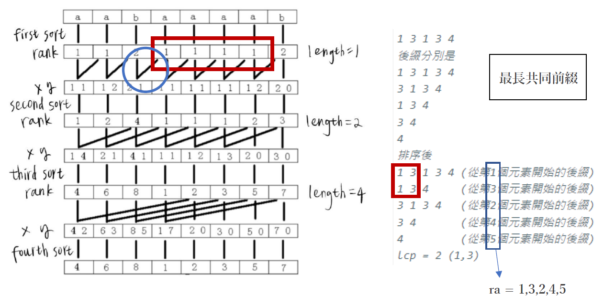

Sophia's UVa Solution
#include <iostream>
using namespace std;
int main(){
int c;
int month[12] = {31,28,31,30,31,30,31,31,30,31,30,31};
string week[7] = {"Friday","Saturday","Sunday","Monday","Tuesday","Wednesday","Thursday"};
cin >> c;
while(c--){
string ans = "";
int a = 0, mon, day;
cin >> mon >> day;
if(mon!=1){
for(int i = 0; i <; mon-1; i++){
a += month[i];
}
}
a+=day;
a%=7;
cout << week[a] << endl;
}
return 0;
}
#include<iostream>
using namespace std;
int main(){
while(1){
int k;
cin >> k;
if(k == 0){
break;
}
int n, m;
cin >> n >> m;
while(k--){
int x, y;
cin >> x >> y;
if(x == n || y == m){
cout << "divisa" << endl;
}
if(x > n && y > m){
cout << "NE" << endl;
}
if(x > n && y < m){
cout << "SE" << endl;
}
if(x < n && y > m){
cout << "NO" << endl;
}
if(x < n && y < m){
cout << "SO" << endl;
}
}
}
return 0;
}
#include <iostream>
#include <vector>
#include <lgorithm>
using namespace std;
int main(){
int c;
cin >> c;
while(c--){
int kk[4];
for(int i = 0; i < 4; i++){
cin >> kk[i];
}
sort(kk,kk+4);
if(kk[0]==kk[3]){
cout << "square" << endl;
}
else if(kk[0]==kk[1] && kk[2]==kk[3]){
cout << "rectangle" << endl;
}
else if(kk[0]+kk[1]+kk[2] >= kk[3]){
cout << "quadrangle" << endl;
}
else{
cout << "banana" << endl;
}
}
}
#include <iostream>
#include <cmath>
#include <iomanip>
using namespace std;
bool ok(double area, int N, int F, double *data){
int sum = 0 ;
for (int i = 0 ; i < N; i++){
sum += data[i] / area;
}
return sum >= F + 1;
}
int main(){
int cases;
cin >> cases;
//double data[10000];
while(cases--){
int N, F;
cin >> N >> F;
double data[N];
double sum = 0;
for(int i = 0; i < N; i++){
cin >> data[i];
data[i] = data[i] * data[i] * M_PI; //體積
sum += data[i]; //Pie體積總和
}
double left = 0, right = sum, mid = (left + right) / 2;
while((right-left) > 1e-5){ //10^(-5)->output要控制在小數點後四位
if(ok(mid, N, F, data)){ //sum >= F+1
left = mid; //代表可以再切更大片的蛋糕(往右搜尋)
}
else{
right = mid;
}
mid = (left + right) / 2;
}
cout << fixed << setprecision(4) << left << endl;
}
return 0;
}
#include <iostream>
#include <cmath>
#include <algorithm>
#include <iomanip>
using namespace std;
class Point{
public:
double x;
double y;
};
Point P[10000];
Point tmp[10000];
int N;
double dist(const Point &l, const Point &r){
return sqrt(pow(l.x - r.x, 2) + pow(l.y - r.y, 2));
}
bool X(const Point &l, const Point &r){
return l.x < r.x;
}
bool Y(const Point &l, const Point &r){
return l.y < r.y;
}
double solve(int L, int R)
{
if (L >= R){
return 1e9;
}
int M = (L + R) / 2;
double d = min(solve(L, M), solve(M + 1, R)); // 左右兩邊最接近的
int idx = 0;
for (int i = M; i >= L && P[M].x - P[i].x < d; --i){ //離"中間垂直線"距離 < d的點存進tmp
tmp[idx++] = P[i];
}
for (int i = M + 1; i <= R && P[i].x - P[M].x < d; ++i){
tmp[idx++] = P[i];
}
sort(tmp, tmp + idx, Y); // 依照y座標排序 O(nlogn)
for(int i = 0; i < idx; i++){
for(int j = 1; j < 4 && i + j < idx; j++){
d = min(dist(tmp[i], tmp[i + j]), d); // 找出tmp裡所有點的最短距離 還有d的距離 取最小值
}
}
return d;
}
int main(){
while (cin >> N && N){
for(int i = 0; i < N; i++){
cin >> P[i].x >> P[i].y;
}
sort(P, P + N, X); // 依照x座標排序
double ans = solve(0, N - 1);
if (ans >= 1e4){
cout << "INFINITY"<< endl;
}
else{
cout << fixed << setprecision(4) << ans << endl;
}
}
}
#include <iostream>
#include <string.h>
using namespace std;
#define N 2005
#define M 10005
int dp[N][M], w[N], sum[N], pre[N][M], ans[N];
int main(){
int cases;
cin >> cases;
while(cases--){
int len;
cin >> len; //港口長度
len *= 100; //m to cm
memset(dp, 0, sizeof(dp));
dp[0][0] = 1;
int n = 0;
sum[0] = 0;
int k;
while(cin >> k, k != 0){ //k != 0
n++; //start from 1
w[n] = k; //第n輛車的長度
sum[n] = sum[n-1] + k; //前i輛車的總長
}
int temp = -1;
for(int i = 1; i <= n; i++){ //w[] start from 1 so i start from 1
for(int j = 0; j <= len; j++){
if(j >= w[i] && dp[i-1][j-w[i]]){ //放左邊
k = i; //最大能放的車輛數
temp = j; //左邊已經放的所有車的總長
dp[i][j] = 1; //左邊車佔了j長度時,可以放i輛車
pre[i][j] = j - w[i]; //前一次放的長度
}
else if(sum[i]-j <= len && dp[i-1][j]){ //放右邊
k = i;
temp = j;
dp[i][j] = 1;
pre[i][j] = j;
}
}
}
int num = k, j;
while(num--){ //總車輛數
j = pre[num+1][temp]; //+1是因為上面的雙for loop裡紀錄陣列的i是1開始，會多1
if(j == temp){ //左邊
ans[num] = 1;
}
else{ //右邊
ans[num] = 0;
}
temp = j;
}
cout << k << endl;
for(int i = 0; i < k; i++){
if(ans[i] == 1){
cout << "starboard" << endl;
}
else{
cout << "port" << endl;
}
}
if(cases){
cout << endl;
}
}
return 0;
}
#include <iostream>
#define MAX 100000000
using namespace std;
int x[2001], y[2001], t[2001];
bool BellmanFord(int n, int m){
int d[2001];
fill(d, d + n, MAX);
d[0] = 0; // 第0個點為起點
// bellman ford
for (int i = 0; i < n - 1; i++){
for (int j = 0; j < m; j++){
if (d[x[j]] != MAX){
if (d[x[j]] + t[j] < d[y[j]]){
d[y[j]] = d[x[j]] + t[j];
}
}
}
}
// 有負環
for (int j = 0; j < m; j++){
if (d[x[j]] + t[j] < d[y[j]]){
return true;
}
}
return false;
}
int main(){
int Case, n, m;
cin >> Case;
while (Case--){
int i;
cin >> n >> m;
for (i = 0; i < m; i++){
cin >> x[i] >> y[i] >> t[i];
// 點 x[i] 連接到點 y[i] (單向) 且 weight 為 t[i]
}
if(BellmanFord(n, m)){
cout << "possible" << endl;
}
else{
cout << "not possible" << endl;
}
}
}
#include <iostream>
#include <cstdio>
#include <algorithm>
using namespace std;
int num[100001];
int UP[100001]; // 有變大的數字的值
int upp[100001]; //每個數字up的表(index)
int DOWN[100001];
int downn[100001];
int up_Max, down_Max;
void up(int i){
int temp = 0;
while(num[i] > UP[temp] && temp < up_Max){
temp++;
}
if(temp == up_Max) {
UP[temp] = num[i];
up_Max++;
}
else if(num[i] < UP[temp]){ // 數字變小時
UP[temp] = num[i];
}
upp[i] = temp;
}
void down(int i){
int temp = 0;
while(num[i] > DOWN[temp] && temp < down_Max){
temp++;
}
if(temp == down_Max){
DOWN[down_Max] = num[i];
down_Max++;
}
else if (num[i] < DOWN[temp]){ //數字變大時
DOWN[temp] = num[i];
}
downn[i] = temp;
}
int main(){
int N;
while (scanf("%d", &N) != EOF) {
up_Max = 0, down_Max = 0;
for (int i = 0; i < N; i++){
cin >> num[i];
}
for (int i = 0, j = N - 1; i < N; i++, j--){
up(i);
down(j);
}
int Max = 0;
for (int i = 0; i < N; ++i){
if(min(upp[i], downn[i]) > Max){ // upp & downn 存的是array index
Max = min(upp[i], downn[i]);
}
}
cout << 2 * Max + 1 << endl;
}
}
/*
input
10
1 2 3 4 5 4 3 2 1 10
output
Max = 4
UP: 1 2 3 4 5 10 0 0 0 0
DOWN: 1 2 3 4 5 0 0 0 0 0
upp: 0 1 2 3 4 3 2 1 0 5
downn: 0 1 2 3 4 3 2 1 0 0
*/
#include <iostream>
#include <bits/stdc++.h>
#define N 2000
using namespace std;
string strA="", strB="";
// 要進行 suffix array 的字串，這裡的字串第一個 index 為 1
int sa[N], rk[N*2], oldrk[N*2], id[N], cnt[N] ;
// sa[i] 表示此字串所有後綴排序後第 i 大的 index
// rk[i] 表示此字串所有後綴排序後，字串中 index 後綴的排名。
// id = 舊的 sa 排名 , cnt 在 radix sort 時幫助
int n, m, maxn, lenA, lenB, flag = 0;
// n 字串長度 , m 文字的最大長度
void build_sa(){ //build suffix array
int i, m, p, w;
// 在這邊把常在迴圈使用的變數名稱拉出來宣告，以避免不斷宣告造成的效率浪費
n = strA.length()-1 ; // 減去 string[0] 的空格
m = max(n, 300); // ascii 上限是 255
memset(cnt, 0, sizeof(cnt)); // reset cnt
memset(rk, 0, sizeof(rk)); // reset rk
// radix sort開始 O(nlogn)
for(i = 1; i <= n; i++){
++cnt[rk[i] = (int)strA[i]];
}
// rk[i] = (int) strA[i] 每一個字元在字串中排名
//++cnt[rk[i] = (int)strA[i]] radix sort 分類
for(i = 1; i <= m; i++){
cnt[i] += cnt[i-1] ;
}
//將 cnt 遞增排序方便之後找出數值排在第幾位
for(i = n; i >= 1; i--){
sa[cnt[rk[i]]--] = i ;
}
// cnt[rk[i]] 先找出字元在字串中排名再透過 cnt 找出他應該排在第幾位
// 隨後進行 cnt[rk[i]]--，方便下一個值得排序位置。
// radix sort結束
for(w = 1; w < n; w *= 2){ // 倍增思想開始 w為1,2,4,8... O(nlogn)
memset(cnt,0,sizeof(cnt)); //第一次 radix sort 開始，排序關鍵為後者
//下面藍圈圈
for(i = 1; i <= n; i++){
id[i] = sa[i];
}
// id 用來記錄現在排序的順序，配合這次的 radix sort 再進行更動
for(i = 1; i <= n; i++){
++cnt[rk[id[i]+w]] ;
}
for(i = 1; i <= m; i++){
cnt[i] += cnt[i-1] ;
}
for(i = n; i >= 1; i--){
sa[cnt[rk[id[i]+w]]--] = id[i] ;
}
// radix sort 與一開始相同，只是多增加 w，因為排序關鍵為後者
// 第一次 radix sort 結束
// 第二次 radix sort 開始，排序關鍵為前者
memset(cnt, 0, sizeof(cnt));
for(i = 1; i <= n; i++) id[i] = sa[i] ;
for(i = 1; i <= n; i++) ++cnt[rk[id[i]]] ;
for(i = 1; i <= m; i++) cnt[i] += cnt[i-1] ;
for(i = n; i >= 1; i--) sa[cnt[rk[id[i]]]--] = id[i] ;
// 第二次 radix sort 結束
// 根據 radix sort再排列一次 rank
memcpy(oldrk, rk, sizeof(rk)); //複製 rank 來幫助 rank 間的交換
for(p = 0, i = 1; i <= n; i++){ // p 為 rank 的等級，i 則是資料
if(oldrk[sa[i]] == oldrk[sa[i-1]] &&
oldrk[sa[i] + w] == oldrk[sa[i-1] + w])
//如果與前一個 rank 值是相同則理應現在應該也要相同
//最好範例：倍增排序圖示說明第一次排序的 rank[4~7], index 從 1 開始，
//紅框框
rk[sa[i]] = p ; //rank 字典排序不變
else
rk[sa[i]] = ++p ; //rank 字典排序增加
}
}
}
void build_lcp(){
int lcp[N] = {} ;
int max_lcp = 0 ; // max_lcp 最大長度
//k 為現在 i 名的後綴與前一名後綴長度算出的最長共同前綴
for(int i = 1 , k = 0 ; i <= n ; i++){
if(k){
k-- ;
}
// 由於下次是把字串 index 在往後一個 index，所以 lcp 最差的情況則會是 x-1, 因為其實要比較的字串只是刪除上一個後綴的第一個字元
while(strA[i+k] == strA[sa[rk[i]-1]+k]){
++k ;
}
// 比較順序每個每個 index 都是獨立,所以陣列都可以分開進行討論
// 比較字串的 index 開始的後綴與他的 sa 前一項(sa-1)找出 lcp
// strA[i] = 字串的 index 開始的後綴
// strA[sa[rk[i]-1]] = 字串的 index 開始的後綴的 sa 前一項
// while 裡面的 +k 則是減少重複比較，在上一次的 lcp 已經找出長度為 x 的 lcp
lcp[rk[i]] = k ;
}
for(int i = 1 ; i <= n ; i++){
if((sa[i] < lenA && sa[i-1] < n+1 && sa[i-1] > lenA ) ||
(sa[i] > lenA && sa[i-1] < n+1 && sa[i-1] < lenA))
max_lcp = max(max_lcp , lcp[i]);
}
if(flag){
cout << endl ;
}
flag = 1 ;
map<string,int> mp ;
if(max_lcp == 0){
cout << "No common sequence." << endl;
return;
}
for(int i = 1 ; i <= n ; i++){
if((sa[i] < lenA && sa[i-1] < n+1 && sa[i-1] > lenA ) || (sa[i] > lenA && sa[i-1] < n+1 && sa[i-1] < lenA)){
if(lcp[i] == max_lcp){
string temp = strA.substr(sa[i] , max_lcp);
if(mp[temp]){
continue;
}
else{
mp[temp] = 1 ;
}
cout << temp << endl ;
}
}
}
}
int main(){
while(cin >> strA >> strB){
lenA = strA.length()+1;
lenB = strB.length();
strA = ' ' + strA + '$' + strB + '#'; // +空格讓之後的排序可以從1開始
build_sa();
build_lcp();
}
return 0;
}

#include <iostream>
#include <cmath>
#include <algorithm>
using namespace std;
const int maxn = 2e5 + 10;
class node{
public:
double left;
double right;
};
bool cmp1(node a, node b){
return a.right > b.right;
}
int main(){
node a[maxn];
int n;
double l, w;
while(cin >> n >> l >> w){
int cnt = 0;
for(int i = 0; i < n; i++){
double pos, r; //位置&半徑
cin >> pos >> r;
if (r * 2 <= w){ //半徑不超過w
continue;
}
double x; //看下面的圖, 畢氏定理 x^2 = r^2 - (w/2)^2
x = sqrt((2*r*2*r) - w*w) / 2; //wrong: sqrt((r*r -(w/2)^2));
a[cnt].left = (double)pos - x;
a[cnt].right = (double)pos + x;
cnt++;
}
sort(a, a + cnt, cmp1); //根據右邊端點從大到小排列
int count = 0;
double left = 0.0, right = (double)l;
while (left < right){ //區間覆蓋 left >= right即結束
int i = 0;
for (i = 0; i < cnt; i++){
if (a[i].left <= left && a[i].right > left){ //看下面的圖
count++;
left = a[i].right; //更新: left爲r[i], 直到left > right
break;
}
}
if (i == cnt){ // 所有的元素沒有一個點符合條件，所以不可能覆蓋掉整個區間
break;
}
}
if (left < right){ //沒辦法覆蓋整個區間
cout << "-1" << endl;
}
else{
cout << count << endl;
}
}
}
#include <iostream>
#include <vector>
#include <queue>
using namespace std;
#define inf 1000000000
#define ii pair<int, int>
int latency[20010];
int n, m, s, t;
vector< vector<ii> > adj;
void Dijkstra(int s){
//latency: 紀錄起點到每一點的最短距離
for(int i = 0; i < n; i++){
latency[i] = inf;
}
latency[s] = 0; //起點
priority_queue<ii, vector<ii>, greater<ii> > pq; //greater: 由小到大
pq.push( ii(latency[s], s) );
ii p;
int t, u;
while(!pq.empty()){
p = pq.top();
pq.pop();
t = p.first; //最短距離
u = p.second; //頂點編號
if(t > latency[u]){
continue;
}
for(int i = 0; i < adj[u].size(); i++){
if(latency[adj[u][i].first] > latency[u] + adj[u][i].second){
latency[adj[u][i].first] = latency[u] + adj[u][i].second;
pq.push( ii(latency[adj[u][i].first], adj[u][i].first) );
}
}
}
}
int main(){
int cases;
cin >> cases;
for(int k = 1; k <= cases; k++){
cin >> n >> m >> s >> t;
//n台伺服器, m條網路, 從伺服器 s 向伺服器 t 寄email所需的最短時間是多少
adj.assign(n, vector<ii>(0));
int x, y, l;
for(int i = 0; i < m; i++){
cin >> x >> y >> l;
//伺服器x, y可以互相寄email, 時間為l
adj[x].push_back( ii(y, l) );
adj[y].push_back( ii(x, l) );
}
Dijkstra(s);
cout << "Case #" << k << ": ";
if(latency[t] != inf){
cout << latency[t] << endl;
}
else{
cout << "unreachable" << endl;
}
}
}
#include <iostream>
#include <iomanip>
#include <vector>
#include <queue>
#include <stdio.h>
#include <string.h>
using namespace std;
const int maxn = 101;
const double inf = 100000000.000;
const double eps = 1e-6;
// 每個警察到每個銀行建立一條邊
class Edge {
public:
int from, to, cap, flow; //capticity
double cost; // 權重
Edge(int u, int v, int c, int f, double w) : from(u), to(v), cap(c), flow(f), cost(w) {}
};
class MCMF{
public:
int n, m;
vector<Edge> edges; // 整個圖
vector<int> G[maxn]; // 存所有點、邊的關係
int inq[maxn]; // 判斷一點有沒有在queue中(for SPFA)
double d[maxn]; // 起點到d[i]的最短路徑
int p[maxn]; // 紀錄路徑
int a[maxn]; // 找到增廣路徑後
void init(int n){
this->n = n;
for(int i = 0; i <= n; i++){
G[i].clear();
}
edges.clear();
}
void AddEdge(int from, int to, int cap, double cost){
edges.push_back(Edge(from, to, cap, 0, cost));
edges.push_back(Edge(to, from, 0, 0, -cost));
m = edges.size();
G[from].push_back(m - 2); // 按照邊的編號存
G[to].push_back(m - 1);
}
bool BellmanFord(int s, int t, int &flow, double &cost){ // 找最短路徑
for (int i = 0; i <= n; i++){
d[i] = inf * 1.0;
}
memset(inq, 0, sizeof(inq));
d[s] = 0;
inq[s] = 1;
p[s] = 0;
a[s] = inf;
queue<int> Q;
Q.push(s);
while (!Q.empty()){
int u = Q.front();
Q.pop();
inq[u] = 0;
for (int i = 0; i < G[u].size(); i++){
Edge &e = edges[G[u][i]];
if (e.cap > e.flow && d[e.to] > d[u] + e.cost){ // 找可以走的邊(容量大於流量)
d[e.to] = d[u] + e.cost;
p[e.to] = G[u][i];
a[e.to] = min(a[u], e.cap - e.flow);
if (!inq[e.to]){ // 判斷有沒有在queue裡
Q.push(e.to);
inq[e.to] = 1;
}
}
}
}
if (d[t] >= inf){ // 如果d[t]沒有更新，等於沒有找到增廣路徑，沒有maximum flow, minimum cost
return false;
}
flow += a[t]; // 更新maximum cost
cost += (double)d[t] * (double)a[t]; //flow * 路徑長度
for (int u = t; u != s; u = edges[p[u]].from){ //用p保存的上一個邊的值更新剛剛找到的增廣路徑的流量
// 兩邊都要更新
edges[p[u]].flow += a[t];
edges[p[u] ^ 1].flow -= a[t];
}
return true;
}
int MincostMaxflow(int s, int t, double &cost){ //計算從s到t的minimum cost, return maximum flow
int flow = 0;
cost = 0;
while (BellmanFord(s, t, flow, cost)); // 一直找增廣路徑直到找不到為止
return flow;
}
};
MCMF mcmf;
double tmp[21][21];
int main(){
int n, m;
//ios::sync_with_stdio(false);
while (cin >> n >> m, n + m){
mcmf.init(100);
for (int i = 1; i <= n; i++){
for (int j = 1; j <= m; j++){
cin >> tmp[i][j];
}
}
mcmf.AddEdge(0, 1, n, 0);
for (int i = 1; i <= m; i++){
mcmf.AddEdge(1, i + 1, 1, 0);
}
for (int i = 1; i <= m; i++){
for (int j = 1; j <= n; j++){
mcmf.AddEdge(1 + i, 1 + m + j, 1, tmp[j][i]);
}
}
for (int i = 1; i <= n; i++){
mcmf.AddEdge(m + 1 + i, m + n + 2, 1, 0);
}
double ans;
mcmf.MincostMaxflow(0, m + n + 2, ans);
cout << fixed << setprecision(2) << (ans / n + eps) << endl;
}
return 0;
}
Copyright © 2021-2022 Sophia Cheng, All Rights Reserved.